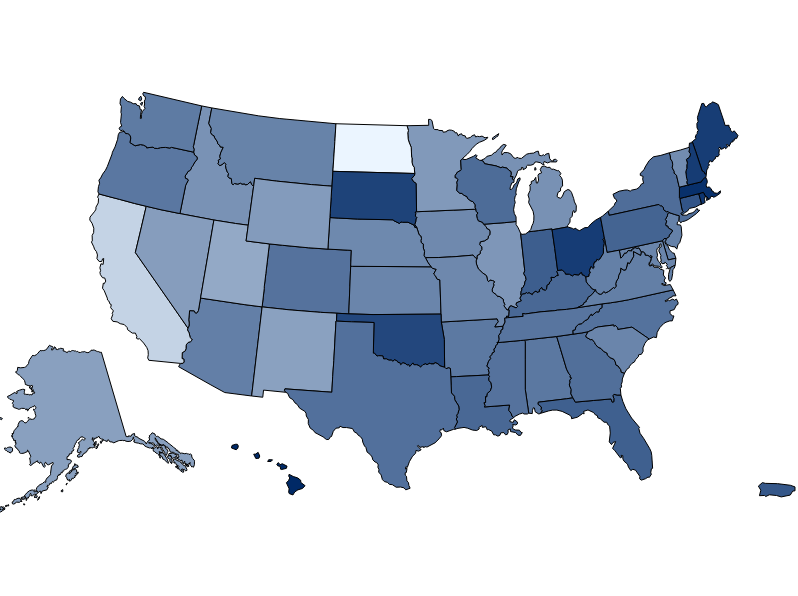

Department Projects
Sharing Major CS Projects
The Moravian CS Program site is where we show off all of the major computer science projects that our students have developed and collaborated on. Some of the projects are completed, while others are still being worked on and improved!
Student Experience
All of our projects give our students experience with real problems and for some of the projects, the students get to work with businesses and clients to produce a usable product. This allows our students to get a more practical education than other computer science programs, making our students more competitive candidates for post-graduation jobs.
Projects on Github
We use Github as we develop our programs because it makes it easier for groups and individuals to cooperate while it also gives us the option of making our projects open for the public to see.

MorningStar
MorningStar is a project intended to introduce CS students to health data visualization. It was originally assigned to a senior capstone class in the spring of 2015 where the students would use d3 and diabetic poke data to show poke ratios on the state and county level. The tool is now being developed so that users may upload their own data files and access web APIs such as the Census Bureau, Google, and the CDC.
Moravian College Summer Team 2015:
Megan Biernat, William Collins, Alec Gerhart, Anna Lamoureux, Steve MacDonald, Charles McDonald, Martin Nesbitt, Andrew Reed, Josh Russett, Michael Turnbach, John Vonelli
Senior Capstone Contributors Spring 2015:
Jason Boccuti, Steve Chakif, Lewis Cooper, Jon Diehl, Hansen Huang, Michael Vitone

Title of Project
A brief description of the project goes here. In porta velit quis mauris luctus, eget luctus neque gravida. Nullam pellentesque pretium rhoncus. Nulla pretium scelerisque sem nec tincidunt. Praesent cursus, nulla vel ultricies venenatis, urna ligula pharetra metus, et mattis elit nunc sed lacus. Sed at elit fringilla, pellentesque eros vel, luctus diam. Donec egestas nisi semper odio dignissim egestas. Etiam vitae lacus a nibh mattis sodales eu sit amet ex. Ut suscipit auctor lacus nec finibus. Vestibulum venenatis imperdiet facilisis. Vivamus in condimentum turpis, in euismod mauris. Nulla facilisi. Ut at nulla aliquam, sodales dui sit amet, tristique lacus.
Developing Team:
List of names
Title of Project
A brief description of the project goes here. In porta velit quis mauris luctus, eget luctus neque gravida. Nullam pellentesque pretium rhoncus. Nulla pretium scelerisque sem nec tincidunt. Praesent cursus, nulla vel ultricies venenatis, urna ligula pharetra metus, et mattis elit nunc sed lacus. Sed at elit fringilla, pellentesque eros vel, luctus diam. Donec egestas nisi semper odio dignissim egestas. Etiam vitae lacus a nibh mattis sodales eu sit amet ex. Ut suscipit auctor lacus nec finibus. Vestibulum venenatis imperdiet facilisis. Vivamus in condimentum turpis, in euismod mauris. Nulla facilisi. Ut at nulla aliquam, sodales dui sit amet, tristique lacus.
Developing Team:
List of names